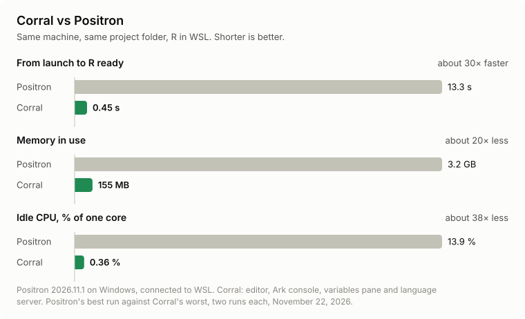

Performance
A full Corral layout has R ready in about 400 milliseconds and uses about 155 MB. These are the measurements against Positron, and the gains of each piece of Corral since it became one Rust binary.
Corral and Positron

How it was measured
- November 22, 2026, on the same machine: Windows with WSL (Ubuntu 24.04), the project folder
test-codigo, R 4.6.1, two runs each. - Positron is version 2026.11.1, on Windows, connected to WSL.
- Corral is a full layout: the editor, the Ark console, the variables pane and the language server. herdr and the terminal aren't counted, because they are open anyway for the agent.
- The chart sets Positron's best run against Corral's worst.
Results
| What | Positron | Corral |
|---|---|---|
| From opening it to R ready | 13.3–17.7 s | 394–453 ms |
| Memory in use | 3.2 GB (1.55–1.58 GB in Windows and 1.64–1.66 GB in WSL) | 154–155 MB |
| CPU at rest | 13.9–19.6 % of one core (10.9–16.8 % in Windows and 2.9–3.0 % in WSL) | 0.36 % |
| R (Ark) | 117 MB | 99 MB |
| From Ctrl+R to the result on screen | not measured | 3–27 ms |
In Corral, the layout is created in 31 ms, the editor is ready in 229–288 ms and the R console in 394–453 ms. From corral send (what Ctrl+R runs) to the result on screen takes about 5 ms; the first call takes about 25 ms.
Where the memory goes
| Positron | Memory |
|---|---|
| The window, in Windows | 1.55–1.58 GB |
| Extension host (WSL) | 676–678 MB |
| Server (WSL) | 275–294 MB |
| Copilot (WSL) | 241–242 MB |
| Data (WSL) | 136–138 MB |
| Ark with R (WSL) | 117 MB |
| ptyHost (WSL) | 68–72 MB |
| fileWatcher (WSL) | 59 MB |
| Corral | Memory |
|---|---|
| Ark with R | 99 MB |
| Fresh | 46 MB |
Each corral process | 2–3 MB |
R weighs about the same in both, because both run Ark. The difference is the interface. In Corral, corral runs as a few small processes: the console, the bridge to the language server, the variables pane.
In an earlier measurement, Positron also started Python with its language server (about 440 MB), because the folder has a pyproject.toml. Corral opens Python only when you use it. Positron's time from Ctrl+R to the result wasn't measured, because that would mean driving its interface with clicks.
An earlier measurement, before Fresh, loading R and the language servers were optimized, gave Corral 181 MB and 0.7 % CPU at rest.
Corral in Rust

The engines were already in Rust: herdr, Fresh, Ark, Air, Ruff and uv. Now all of Corral is one Rust binary, built from rs/ with no dependencies. The only parts that aren't Rust run inside your own sessions: r/corral.R in R and py/ in IPython.
The first pieces to move to Rust were what runs on every key press, what Claude uses and the processes that stay open. These are the gains of that stage:
| Piece | Rust | Before, in Python |
|---|---|---|
corral send (Ctrl+R, F5, ctrl+b enter) | under 10 ms, 2.5 MB | about 50 ms, 26 MB |
toggle and switch (ctrl+b t, ctrl+b y) | 10–30 ms | 50–60 ms |
Variables pane (corral vars --pane) | 3 MB, 0.1 % CPU | 26 MB |
Bridge to Ark's language server (corral _lsp r) | 3 MB | 45 MB |
Mirador's server (corral _mirador) | 3 MB | 26 MB |
corral eval (Claude runs code in your console) | 20–40 ms | about 210 ms |
Ark console (corral _console r) | 3 MB, starts in 0.33 s | jupyter-console: 55 MB, 0.47 s |
What repeats after each command, and what keeps running in the editor, went down too:
| What | Before | Now |
|---|---|---|
| R variables after each command | 79 ms | 3 ms, or 4 ms if a variable changed |
| Python variables after each command | 2.4 ms | 0.4–0.6 ms |
| Fresh plugin at rest (the editor's CPU) | 1.0 % | 0.56 % |
| The editor follows a herdr theme change | up to 2 s | 0.4 s |
| Fresh at rest, with the plugins it doesn't use turned off | 60 MB, 0.57 % CPU | 46 MB, 0.20 % |
Loading Corral in R (corral.R) | 85 ms, 23 MB | 27 ms, 17 MB |
| Python language servers | 340 MB (pylsp and Ruff) | 159 MB (ty and Ruff) |
| Mirador shows a new plot | 0 to 1.5 s (it asked every 1.5 s) | about 80 ms |
| A plot of 100 thousand points in Mirador | 7.1 MB SVG | 0.7 MB PNG |
While you work, each command in the R console takes about 2.5 ms from Enter to the next prompt (1.5 ms without Corral), also with a table of 2 million cells in memory. In Python it takes about 6 ms, with or without Corral.
What changed in R and Python
corral.R no longer loads packages it doesn't need at startup. httpgd (with unigd, systemfonts, lifecycle and cli) loads with the first plot, and each variable's fingerprint uses the memory address base R gives, without rlang, which took 54 ms to load.
Variables are described again only if the object changed (another memory address, another length, other dimensions or, in tables, other column types), and the file the pane reads is rewritten only when something changed.
The Python language server and Ruff run straight from the environment uv keeps for them in its cache (corral _lsp python, corral _lsp ruff). Through uvx or uv run, uv stayed alive the whole time as a waiting parent process, about 45 MB each. The Python console still uses uv run, because IPython has to run inside the project's environment.
The Python language server moved from pylsp to ty. In the same test with pandas, ty uses 141 MB in one process (pylsp, 172 MB in two), starts in milliseconds (pylsp, in half a second), completes in half the time and shows help in 2 ms with the full documentation (pylsp took 0.3–0.4 s and only showed the signature).
What changed in the editor
Corral's Fresh plugin no longer checks anything on a timer. It copies the draft when you stop typing for 0.4 s (at least every 2 s if you keep typing), watches the theme files through the file system, and opens the folder view when a draft appears.
Fresh comes with about 50 plugins. Corral turns off the ones it doesn't use in fresh/config.json: agent orchestration, which herdr already does, welcome screens, Kubernetes, devcontainers, and languages such as C# or C++. With that, Fresh opens with 48 MB instead of 60, and at rest it uses 0.20 % CPU instead of 0.57 %. Checking every 2 s whether the open files changed (when Claude edits them, for example) costs so little that it doesn't show in the measurements, so it stays.
One binary
The binary talks to herdr over its socket and to Ark over the Jupyter protocol (ZeroMQ and HMAC-SHA256 signatures, implemented in rs/src/zmtp.rs and rs/src/sha256.rs). Everything else is in the binary too: it reads herdr's configuration with its own TOML reader, unpacks Ark (published as a zip), Fresh, DuckDB and Air with its own decompressor, and writes the editor's theme and the palette.
If you change something in rs/, build it again with cargo build --release. corral --version says which folder the binary you are using comes from.